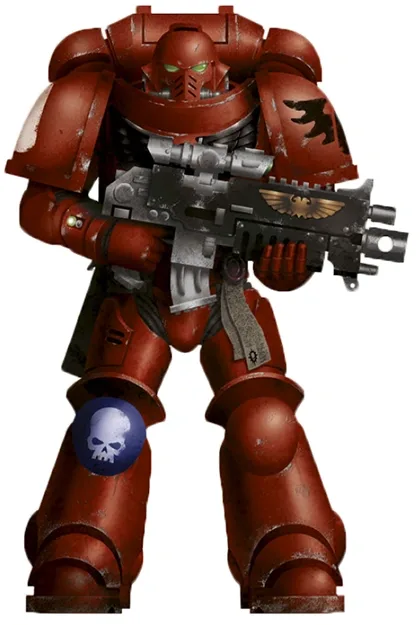
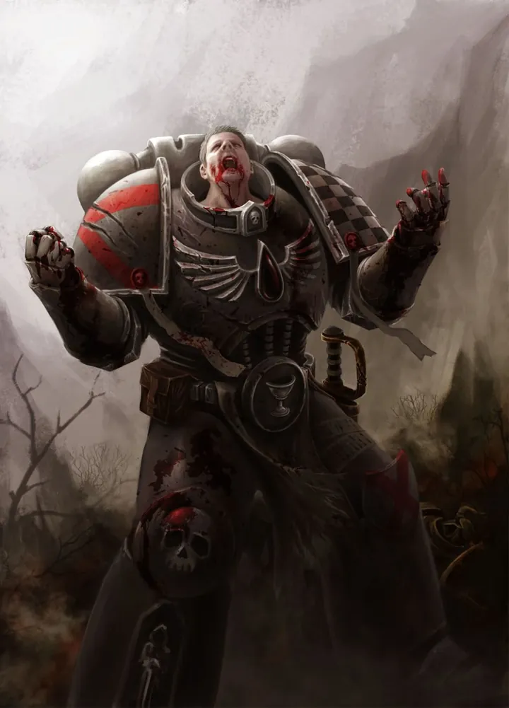
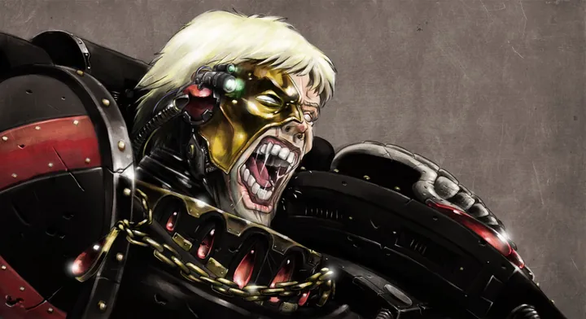
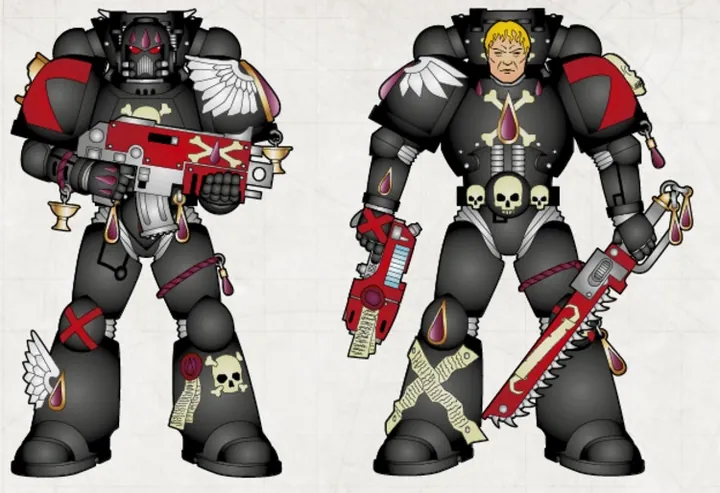
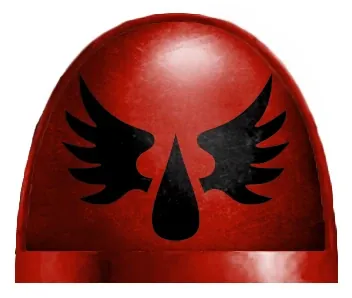
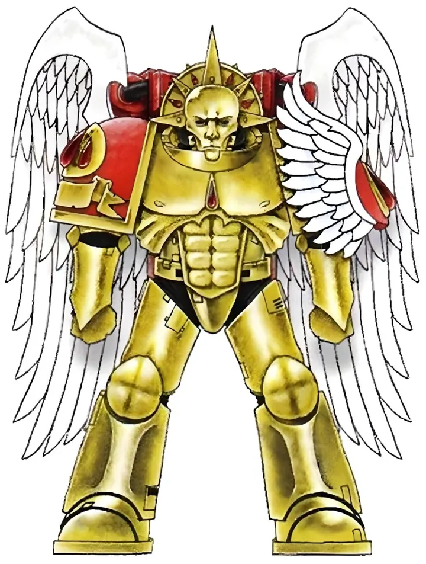
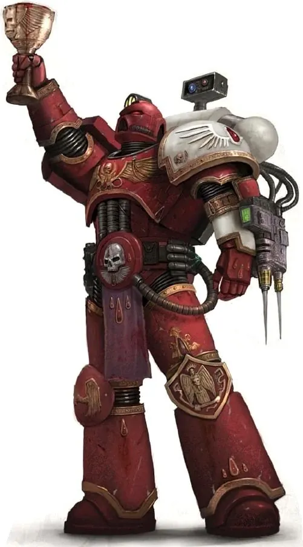
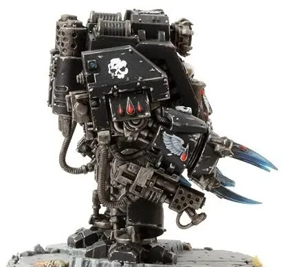
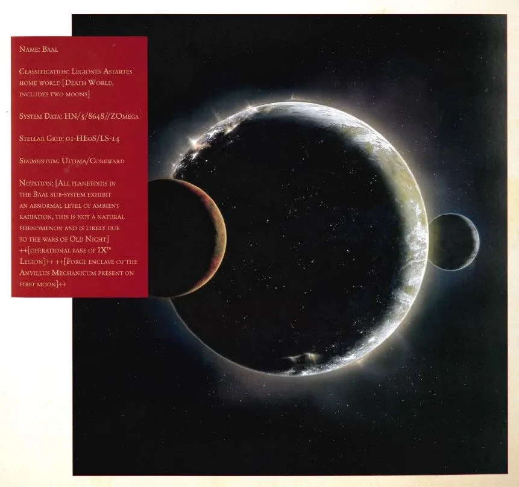

01ภาพรวม

อัศวินที่งดงามดั่งเทวดา แต่แบกคำสาปกระหายเลือดจากการตายของ Primarch — ตัวเอกของกล่อง Armageddon
02ต้นกำเนิด
Legion ที่ 9 ภายใต้ Sanguinius ผู้มีปีก ทหารถูกคัดเลือกจากชนเผ่าบนดาว Baal Secundus ที่เต็มไปด้วยรังสี ยีนของพวกเขามีข้อบกพร่องสองอย่าง: Red Thirst (ความกระหายเลือด) และ Black Rage (เมื่อความทรงจำการตายของ Sanguinius ครอบงำ จนคลั่งเหมือนตัวเองเป็น Sanguinius ที่กำลังจะตาย)
03เนื้อเรื่องเจาะลึก
Sanguinius และดาว Baal
Primarch ทารกของ Legion ที่ 9 ตกลงบนดาว Baal Secundus ที่เต็มไปด้วยรังสี ชาวเผ่าคิดว่าเขาเป็นตัวกลายพันธุ์เพราะมีปีก แต่เขาเติบโตเร็วและนำชนเผ่ามนุษย์ที่เหลือกำจัดพวกกลายพันธุ์ได้ Legion ที่เคยมีชื่อเสียงเรื่องความโหดร้ายและกระหายเลือดเปลี่ยนไปภายใต้การนำของเขา กลายเป็นนักรบผู้สง่างาม
ความตายบนยานของ Horus
ในวันสุดท้ายของ Siege of Terra Sanguinius ขึ้นไปบนยาน Vengeful Spirit พร้อมจักรพรรดิเพื่อเผชิญหน้า Horus และถูกสังหาร ความเจ็บปวดและความสิ้นหวังในวินาทีนั้นถูกฝังในพันธุกรรมของทุก Blood Angel กลายเป็น Black Rage ที่หลอกหลอนมาหมื่นปี
Devastation of Baal
Hive Fleet Leviathan บุกดาว Baal ด้วยฝูงที่มากที่สุดเท่าที่เคยเห็น Chapter ในสายเลือด Sanguinius ทั้งหมดมารวมตัวยืนหยัดครั้งสุดท้าย ตอนที่ทุกอย่างดูสิ้นหวัง Great Rift เปิดขึ้นและกองเรือของ Guilliman มาถึงพร้อม Primaris — Blood Angels ได้รับกำลังเสริม และ Dante ถูกแต่งตั้งเป็นผู้ปกครอง Imperium Nihilus
04ยุค 30K — ในยุค Great Crusade และ Horus Heresy

ยุค 30K สง่างามและเป็นศิลปิน รอดจากกับดักปีศาจที่ Signus และมาปกป้อง Terra การตายของ Sanguinius บนยานของ Horus ทำให้เกิดบาดแผลทางจิต Black Rage ที่ส่งต่อถึงทุกรุ่น
ดูภาพรวมยุค 30K ทั้งหมดที่ เนื้อเรื่องยุค 30K และความต่างของสองยุคที่ เปรียบเทียบ 30K vs 40K
05นิสัยและวัฒนธรรม
- รักศิลปะ ความงาม และประเพณี มีชีวิตยืนยาวกว่า Chapter อื่น
- ต่อสู้กับความกระหายเลือดภายในอยู่ตลอด — ผู้ที่ตกอยู่ใน Black Rage จะถูกส่งไปรบใน Death Company จนตาย
- ถือว่าตัวเองเป็นทายาทความสูงส่งของ Sanguinius
06จุดที่น่าสนใจ
- นิยมรบระยะประชิดด้วยเครื่องไอพ่นติดหลัง
- มี Chapter ทายาทมากมาย เช่น Flesh Tearers, Angels Sanguine
- Sanguinary Guard สวมเกราะทองและหน้ากากมรณะของ Sanguinius
07ความสามารถพิเศษ
สิ่งที่ทำให้ Blood Angels แตกต่างจากทัพอื่น — ทั้งพลังที่ติดตัวมาทั้งเผ่า/ทัพ และความสามารถของบุคคลสำคัญ
ของทั้งเผ่า/ทัพ

Red Thirst — ความกระหายเลือด
ข้อบกพร่องในพันธุกรรมของ Sanguinius ทำให้ Blood Angels ทุกนาย "หิวเลือด" ตลอดเวลา ยิ่งอยู่ในสนามรบกลิ่นเลือดยิ่งกระตุ้น ส่วนใหญ่ควบคุมได้ด้วยวินัย ศิลปะ และพิธีกรรม — แต่ถ้าปล่อยให้ความหิวชนะ ทหารจะคลั่งกินเลือดศัตรูหรือแม้แต่ผู้บริสุทธิ์ และอาจกลายเป็นสัตว์ร้ายที่ต้องถูกกำจัด Chapter ลูกหลานบางกลุ่ม เช่น Flesh Tearers ควบคุมได้แย่กว่ามาก

Black Rage — คลั่งด้วยความทรงจำของ Sanguinius
ในยามรบหนัก ความทรงจำการตายของ Sanguinius บนยานของ Horus ไหลเข้าสู่จิตใจของทหาร เขาจะ เชื่อว่าตัวเองคือ Sanguinius ในวันสุดท้ายของ Horus Heresy เห็นศัตรูตรงหน้าเป็นผู้ทรยศ หรือแม้แต่ เห็นเป็น Horus และพูดถึงเหตุการณ์เมื่อหมื่นปีก่อนราวกับเกิดขึ้นตอนนี้ แทบไม่มีใครฟื้นกลับมาได้ ผู้ที่ติด Black Rage ถูกรวมเป็น Death Company และถูกส่งไปตายในจุดที่ดุเดือดที่สุด

Death Company
ทหารที่ติด Black Rage ทาเกราะเป็นสีดำพร้อมกากบาทแดง นำโดย Chaplain ความคลั่งทำให้พวกเขาไม่รู้สึกเจ็บ สู้ต่อแม้บาดแผลที่ควรตาย — เป็นทั้งอาวุธที่น่ากลัวที่สุดและโศกนาฏกรรมของ Chapter

อายุยืนและความงาม
Blood Angels มีอายุยืนยาวกว่า Chapter ส่วนใหญ่ หลายคนมีอายุเกิน 1,000 ปี และมีรูปร่างหน้าตาสง่างามเหมือนรูปปั้น พวกเขาเป็นศิลปิน นักประพันธ์ และช่างฝีมือชั้นยอด — ความงามคือสิ่งที่พวกเขาใช้ยึดจิตใจไม่ให้จมในความมืด

ปีกแห่งสวรรค์
สืบทอดจาก Sanguinius ผู้มีปีกจริง Blood Angels นิยมใช้ Jump Pack ตกลงจากฟ้าเข้าหาศัตรู หน่วย Sanguinary Guard ถึงกับสวม Jump Pack ที่ทำเป็นรูปปีกทองคำ
ของบุคคลสำคัญ

Commander Dante
Space Marine อาวุโสที่สุดChapter Master อายุกว่า 1,100 ปี สวมหน้ากากมรณะทองคำของ Sanguinius และถือขวาน Axe Mortalis มีนิมิตว่าตนจะได้ปกป้องจักรพรรดิในวันสุดท้าย ปัจจุบันเป็นผู้ปกครองครึ่งจักรวรรดิที่ถูกตัดขาด (Imperium Nihilus)

Mephiston
ผู้เอาชนะ Black Rageเดิมคือ Brother Calistarius ที่ติด Black Rage และถูกฝังใต้ซากตึกบน Armageddon 7 วัน เมื่อออกมาเขาเอาชนะความคลั่งได้ กลายเป็น "เจ้าแห่งความตาย" Librarian ที่ทรงพลังที่สุดคนหนึ่ง

Astorath the Grim
ผู้ปลดปล่อยผู้หลงทางChaplain ผู้เดินทางไปทุก Chapter ในสายเลือด เพื่อปลิดชีวิตผู้ที่จมใน Black Rage จนไม่มีทางกลับ ถือเป็นการ "ปลดปล่อย" วิญญาณด้วยความเมตตา

Lemartes
ผู้พิทักษ์ผู้หลงทางChaplain ที่ติด Black Rage เอง แต่ยังพอควบคุมได้ จึงนำ Death Company ลงสนาม ระหว่างสงครามถูกเก็บในห้อง Stasis
08หน่วยและบทบาทในกองทัพ
Blood Angels แบ่งกองร้อยตาม Codex แต่ต้องต่อสู้กับคำสาปในเลือด (Red Thirst และ Black Rage) จึงมีตำแหน่งพิเศษที่ไม่มีใน Chapter อื่น

Sanguinary Priest
แซงกวินารี พรีสต์"หมอ" ของ Blood Angels ทำหน้าที่แทน Apothecary ถือจอก Blood Chalice ที่มีเลือดของ Sanguinius (ในเชิงพิธีกรรม) ช่วยระงับ Red Thirst ของพี่น้อง และเก็บเมล็ดพันธุ์ยีน
Death Company
เดธคอมพานีทหารที่คลั่งด้วย Black Rage คิดว่าตัวเองคือ Sanguinius ในวันสุดท้ายของ Horus Heresy ถูกรวมเป็นหน่วยพลีชีพ สวมเกราะดำกากบาทแดง ส่งไปตายในจุดที่ดุเดือดที่สุด
Chaplain (Death Company)
แชปเลนผู้นำเดธคอมพานีChaplain ที่นำ Death Company ลงสนาม คอยกำกับพลังคลั่งให้ไปถูกทิศทาง เช่น Lemartes ผู้พิทักษ์แห่งผู้หลงทาง ซึ่งตัวเขาเองก็ติด Black Rage
Sanguinary Guard
แซงกวินารีการ์ดองครักษ์ทองคำของ Chapter Master สวมเกราะ Artificer ทองพร้อมปีก Jump Pack และหน้ากากมรณะที่หล่อจากใบหน้าของ Sanguinius
Chief Librarian
หัวหน้า LibrarianMephiston "เจ้าแห่งความตาย" ผู้เอาชนะ Black Rage ได้ด้วยตัวเองหลังถูกฝังในซากปรักหักพังของ Armageddon เป็น Librarian ที่ทรงพลังที่สุดคนหนึ่ง

Death Company Dreadnought
เดรดนอตเดธคอมพานีDreadnought ที่คลั่งด้วย Black Rage ต้องถูกล่ามโซ่ไว้ระหว่างรอออกรบ ปล่อยออกมาฉีกศัตรูด้วยกรงเล็บเท่านั้น
ตำแหน่งมาตรฐานของ Space Marine (Captain, Apothecary, Techmarine ฯลฯ) ดูได้ที่ หน่วยและบทบาทของ Space Marines และกฎการจัดองค์กรที่ Codex Astartes
09วีรกรรมและเหตุการณ์สำคัญ
สงคราม Armageddon ครั้งที่ 2
Dante นำ Blood Angels ขับไล่ Ghazghkull ออกจาก Armageddon
Devastation of Baal
ยืนหยัดปกป้องดาวบ้านเกิดจาก Hive Fleet Leviathan จนกองเรือของกิลลิมันมาช่วย
Arks of Omen
Dante พ่ายต่อ Angron และได้รับการช่วยเหลือจาก Lion El'Jonson
10ตัวละครสำคัญ
Commander Dante
Chapter Master · ผู้สำเร็จราชการ Imperium Nihilusอายุกว่า 1,100 ปี ผ่าน Rubicon Primaris และนำ Chapter ทายาททั้งหมด

Sanguinius
Primarch (เสียชีวิต)นับถือดั่งนักบุญ
11ยุค 40K — สหัสวรรษที่ 41
ยุค 40K Blood Angels ต่อสู้ที่ Armageddon ในสงครามครั้งที่ 2 และเป็นหนึ่งใน Chapter ที่ถูกเกรงขามที่สุด แม้จะต้องปกปิดคำสาปของตัวเอง
12เนื้อเรื่องล่าสุด (Era Indomitus / M42)
หลังรอดจากการทำลาย Baal ได้รับกำลังเสริม Primaris จำนวนมาก Dante ถูกตั้งเป็นผู้สำเร็จราชการ Imperium Nihilus และในเนื้อเรื่อง 11th Edition Blood Angels เป็นทัพหลักในกล่อง Armageddon ที่รบกับ Orks ของ Ghazghkull
หลังการเกิด Great Rift ปฏิทินของจักรวรรดิคลาดเคลื่อน เหตุการณ์ยุคปัจจุบันจึงมักระบุเพียง 'M42' ไม่มีปีที่แน่นอน
13แกลเลอรี


